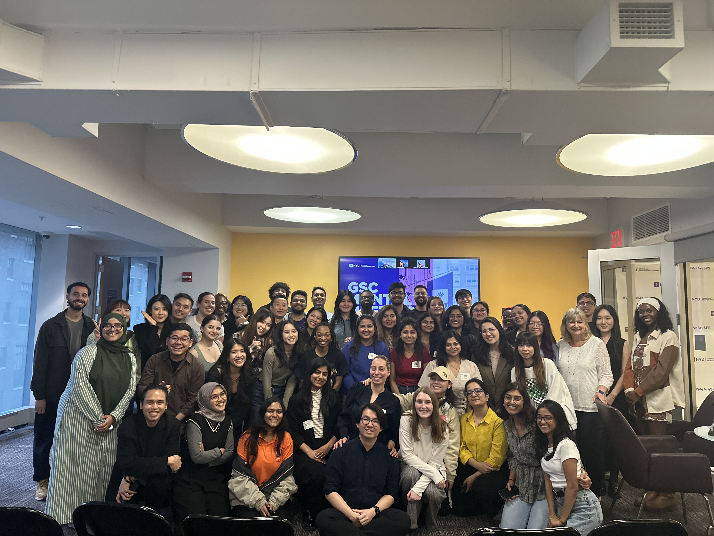
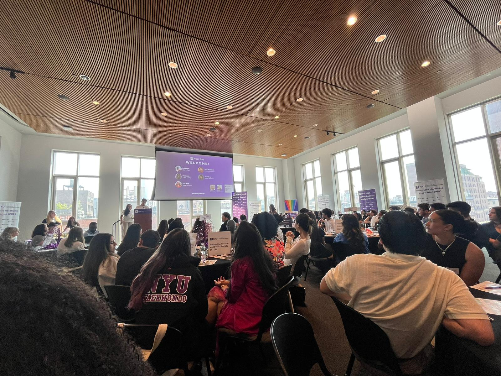

Event Planning


SPS Hospitality, Tourism, & Events Society (HTES)
Site Tours:
- W New York – Union Square
- Ennismore HQ
- Eleven Madison Park
- Brooklyn Paramount
Volunteering:
- NYC Wine & Food Festival
- NYU Violet 100
- Walk MS: Jersey City
Networking:
- Social Mixer
- Spring Kickoff
- Midpoint Mingle
- Cheese Tasting Social
- Final Toast
Seminars:
- Building and Growing a Wildly Successful Festival in NYC
- Alumni Discussion Panel
SPS Events Committee
Yearly School-Wide Events:
- Global Village
- Legacy Week
- Winter Ball
- Spring Cruise
Student Government Organization (SGO)
- Cosplay Cafe
- Culture Fair
- Founders' Day
- Flowers for Favorites
- Penny Wars
- Fashion Show
- Talent Show
- Six Flags Trip
- Masquerade Ball
- Senior Prom
Event Planning Internship
- NYC Multicultural Festival
- Black History Month Celebration
- 30th Precinct Community Council Seniors' Dinner
- Future Leaders Program
- Giveback Tuesdays
- NYACE Choir